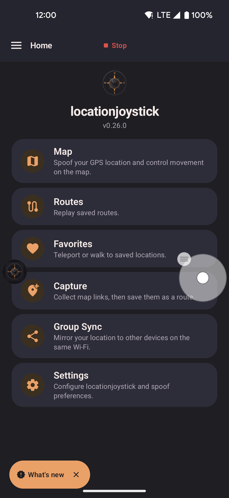
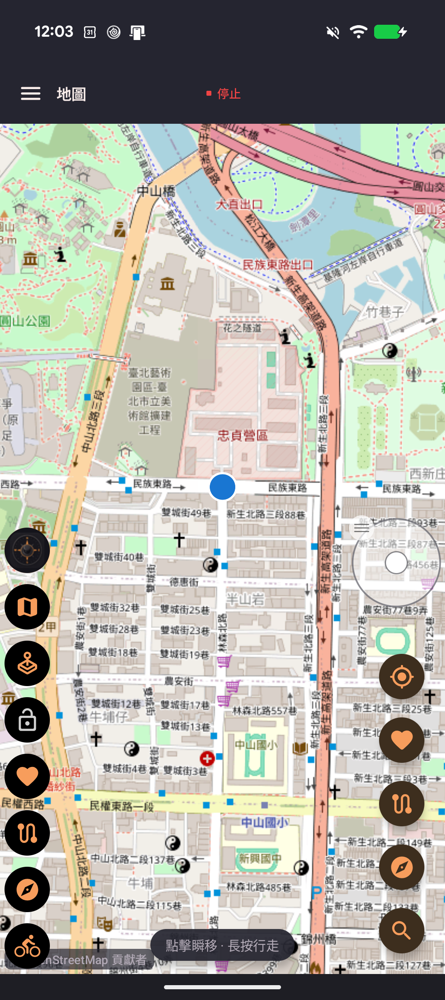

Overlays
Floating joystick
The floating joystick is a round control that stays on top of any app. Drag it to move your fake location. Show or hide it from the floating widget. Spoofing stays on.

- Drag the center dial in any direction. Pull farther from the center to move faster, up to your selected speed.
- When unlocked, let go to stop. The stick returns to the center. Your position stays where you stopped.
- Drag the outer ring to move the joystick anywhere on the screen.
- Lock mode keeps you moving in the same direction after you let go. Drag back to the center to stop while keeping lock on. Pull outward to move again. Tap the widget's lock button to unlock.
- Change speed with the widget's speed cycle button. You do not need to lift your finger off the joystick.
- Moving the stick pauses your walk, route, roam, or planting so you can steer. Your destination and progress are kept, even while the app finds a path along roads. Letting go leaves the activity paused. Tap Resume to continue, or choose another destination to start a new walk. If you follow a group leader, following turns off and you stay in the group.
- Touching the very center of the stick or dragging the outer ring does not pause an activity.
Floating widget
The floating widget is a small panel of quick controls. Tap the round button to expand it. It stays on screen when you switch apps.

- Tap the button again to collapse the panel.
- Press and hold the app icon to show Pause and Stop. Pause turns spoofing off and keeps the widget. The other buttons fade until spoofing is on again, and Pause becomes Start. Stop ends spoofing and removes the widget. A short tap still expands or collapses the panel. Drag still moves the widget.
- Lists and route options follow Light or Dark mode from Settings → Menus → Appearance. The round buttons stay dark so you can see them over other apps.
- The route start sheet has the same options as Replay options.
- Choose which controls appear, and their order, in Settings → Menus → App Features. Changes apply the next time you open the widget.
- While a route plays, pause and stop appear in the widget. A count such as
3/12at the bottom of the list shows your current stop. - After you turn on the paste button, press and hold it to show a Capture shortcut. The shortcut opens the Capture page. A short tap opens the paste box.
- To hide the widget button, use Hide floating widget in Settings.
Available widget controls
| Control | What it does |
|---|---|
| Map shortcut (map icon) | Opens a small map you can move, above your game. Taps outside the map go to the game. Use the expand button for full screen, and shrink it again without losing your map position. Walk, teleport, paste coordinates, or start roaming from it. The N arrow keeps north at the top. Turn it off to rotate the map. |
| Show / hide joystick (joystick icon) | Shows or hides the joystick. The icon is orange when visible and grey when hidden, including during automatic movement. Moving the stick pauses the activity so you can steer. |
| Lock joystick | Shows the joystick if hidden, then keeps its direction after you let go. Tap again to unlock. Returning to the center stops movement but keeps lock on. The icon stays orange when locked and grey when unlocked, during both playback and pause. Locking alone does not pause an activity; moving the stick does. |
| Routes picker | Lists your routes. Tap one to start, rename, share, or delete it. The button is orange when idle, green while moving, and grey while paused. While a route runs, it shows pause, stop, and Previous / Next stop. Search and sort work as on the Routes screen. |
| Favorites picker | Lists your favorites with teleport and walk shortcuts. Open a favorite to rename or delete it. Save your current position as a favorite, or share it with the share button. Search and sort work as on the Favorites screen. |
| Paste coordinates | Opens a small box at the bottom of the screen to paste coordinates. You can still use the app above it, or shrink the box to a bar while you copy more points in another app. Off by default. Turn it on in Settings → Menus → App Features. See Map → Paste coordinates for formats and options. If you paused spoofing, tap Start before you use a paste action. |
| Roaming | Opens Walk around the block and Planting, so you can roam without opening the app. On by default. The button is orange when idle, green while moving, and grey while paused. While roaming runs, tap it for pause and stop. |
| Altitude override | Type a fixed height for your fake location. It replaces the automatic height until you reset it in Settings → Movement & GPS. Off by default. Turn it on with Show altitude override button in Settings → Menus → Privacy. |
| Tap to Walk crosshair | Places a clear layer over your app. Your next tap becomes your walk destination. Appears only when Tap to Walk is on. See Tap to Walk. |
| Speed cycle | One tap switches to the next speed. The icon shows the current speed. The new speed applies at once to the joystick, walking, roaming, and a playing route. |
Requirements
Both overlays need the Display over other apps permission. First-run setup walks you through it. On some phones, such as Xiaomi or Oppo, this permission can reset after a restart. If an overlay disappears, check your phone's autostart and battery settings.